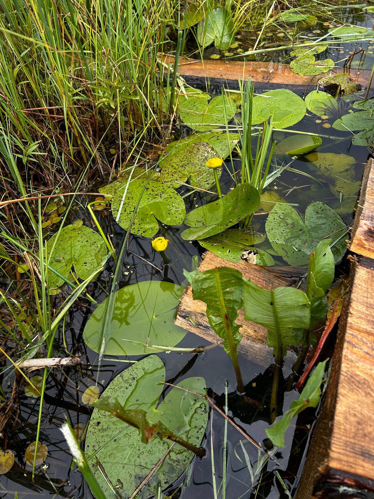
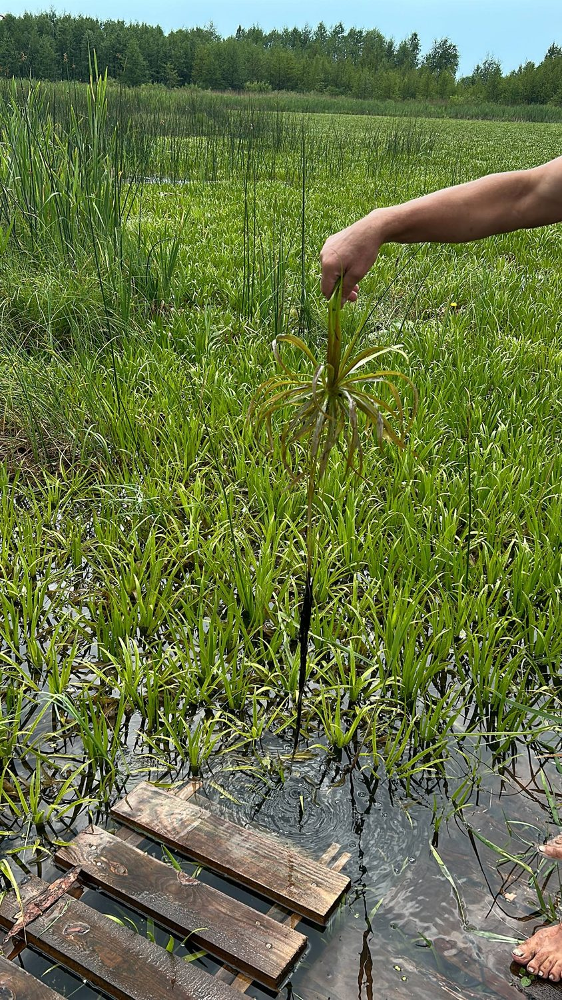
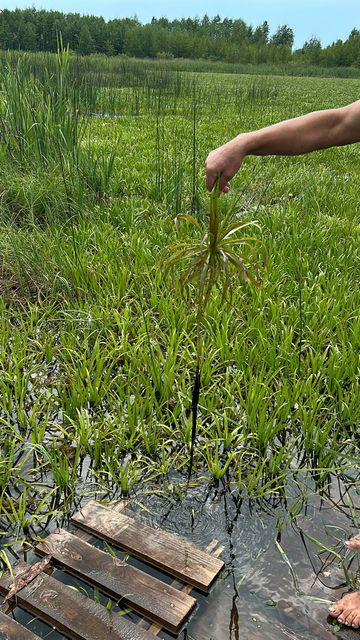
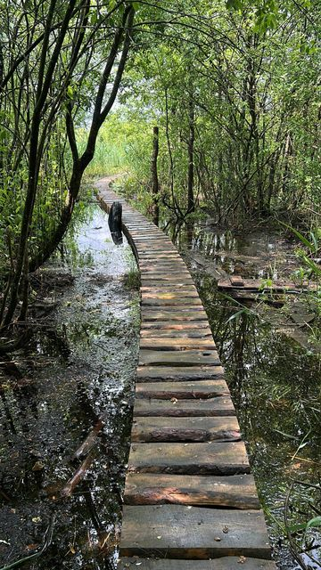
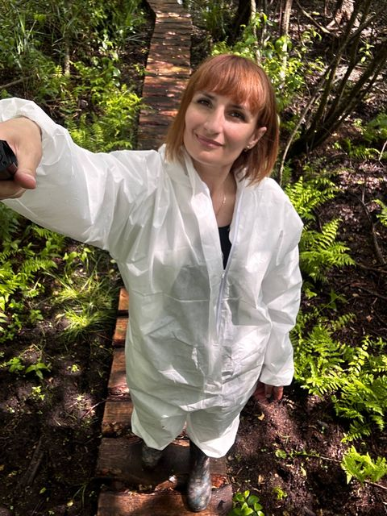
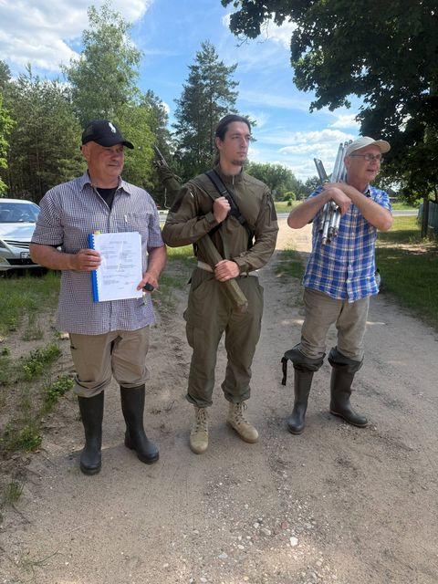
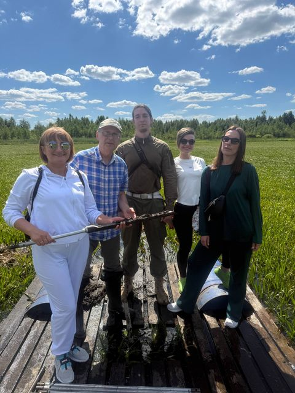

Природное сырьё · БеларусьОпределение
Что такое
сапропель
Сапропель — донные отложения пресных водоёмов, которые формируются из остатков растений, микроорганизмов и минеральных частиц. В зависимости от условий озера меняются цвет, плотность, зольность и состав.
Сапропель описывается как пресноводный, бессульфидный и среднезольный. Эти характеристики важны для стабильности сырья и производства.

Месторождение сапропеля · Дятловский районИсточник
Почему
это сырьё
Месторождение расположено в Дятловском районе Гродненской области. Сырьё добывается филиалом «Санаторий «Радон» ОАО «Белагроздравница» — предприятием, для которого сапропель является одним из лечебных факторов.
Полевые исследования
Как изучают
сырьё
Маршрут к озеру, отбор образцов, фиксация условий и работа команды. Фотографии с полевых выездов помогают показать, как сырьё связано с природной средой.





Состав
Что находится
в сырье
Состав зависит от партии и горизонта добычи. Точные показатели фиксируются в документах на сырьё и продукцию.
Минералы
Макро- и микроэлементы в природной форме. Их набор и количество зависят от озёрных отложений.
Гуминовые кислоты
Органические компоненты сапропеля, которые изучаются и применяются в косметических формулах.
Аминокислоты и витамины
Природные органические вещества, которые входят в состав сырья и учитываются при производстве.
Органическое вещество
Основа сапропеля. Именно она отличает его от минеральных грязей и определяет свойства массы.
Применение
Где используют
сапропель
Бальнеология
Грязевые аппликации и процедуры в санаторно-курортной практике. Применяются по назначению специалиста и с учётом противопоказаний.
По назначениюКосметология
Маски, обёртывания и уходовые программы. Косметический сапропель отличается от лечебной грязи по назначению и документам.
Студии и уходПрофессиональный уход
Продукция для клиник, салонов и студий. Обучение и протоколы — через SaproLux.
B2B и B2C
Республики
Беларусь
Доказательная база
Документы,
а не обещания
Изделие медицинского назначения «Грязь лечебная сапропелевая» имеет регистрационное удостоверение Минздрава Республики Беларусь. Производство работает по техническим условиям предприятия.
Границы
Чего мы
не утверждаем
Документы · производство
Нужны детали
по сырью?
Производство ответит по составу, партиям и документам. Вопросы покупки продукции — через ООО «СапроЛюкс».